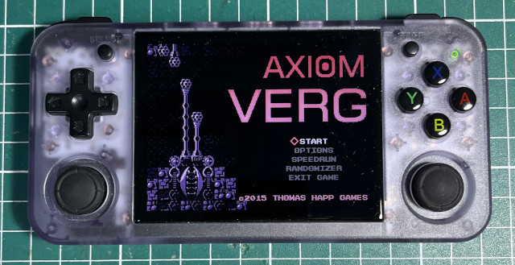

參考資訊：
https://github.com/FNA-XNA/FAudio
問題如下：
2025-11-30 00:45:32,438 - (0): Void Initialize()(): Initializing save data. 2025-11-30 00:45:32,474 - Creating render target TitleState_DrawBuffer, 480 x 270 INFO: OpenAudioDevice failed: ALSA: Couldn't open audio device: 设备或资源忙 ================================================================= Native Crash Reporting ================================================================= Got a SIGSEGV while executing native code. This usually indicates a fatal error in the mono runtime or one of the native libraries used by your application. ================================================================= ================================================================= Native stacktrace: ================================================================= 0x558d5ce9d8 - mono : 0x558d5cece4 - mono : 0x558d586b18 - mono : 0x558d54fa08 - mono : 0x7f83f306c0 - linux-vdso.so.1 : __kernel_rt_sigreturn 0x7f83a22008 - /lib/aarch64-linux-gnu/libc.so.6 : 0x7f839da83c - /lib/aarch64-linux-gnu/libc.so.6 : raise 0x7f7a1e31b4 - /usr/lib/libSDL2-2.0.so.0 : 0x7f7a1e3278 - /usr/lib/libSDL2-2.0.so.0 : 0x7f83f306c0 - linux-vdso.so.1 : __kernel_rt_sigreturn 0x7f7523ec6c - /mnt/mmc/Roms/APPS/axiom-verge/libs/libFAudio.so.0 : FAudio_INTERNAL_VoiceOutputFrequency 0x7f752379f0 - /mnt/mmc/Roms/APPS/axiom-verge/libs/libFAudio.so.0 : FAudio_CreateSourceVoice 0x7f7524d158 - /mnt/mmc/Roms/APPS/axiom-verge/libs/libFAudio.so.0 : XNA_PlaySong 0x7f75ba8c98 - Unknown
解法如下：
# cd
# git clone https://github.com/FNA-XNA/FAudio
# cd FAudio
# git checkout 22.03
# mkdir build
# cd build
# vim ../src/XNA_Song.c
FAUDIOAPI float XNA_PlaySong(const char *name)
{
return 0;
}
# cmake ..
# make -j4
P.S. libFAudio.so、libFAudio.so.0、libFAudio.so.0.22.03
完成
